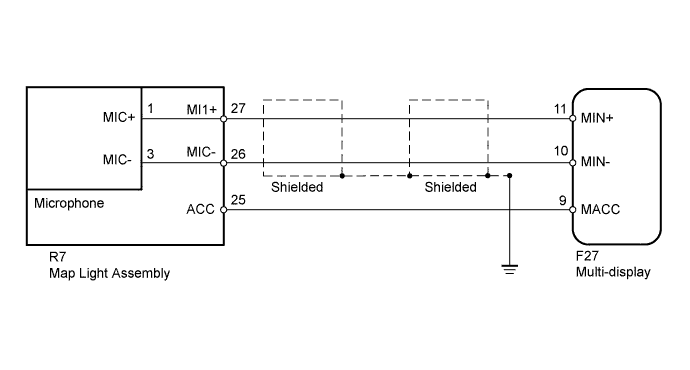
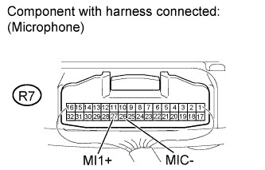
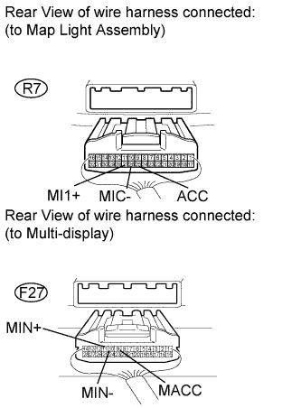
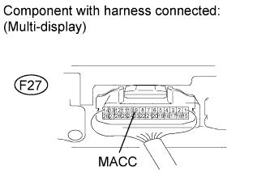
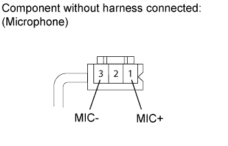

NAVIGATION SYSTEM > Microphone Circuit between Overhead J/B and Multi-display |

| 1.CHECK MICROPHONE |
 |
Check the waveform of the microphone using an oscilloscope.
| Item | Content |
| Terminal No. (Symbol) | R7-27 (MI1+) - R7-26 (MIC-) |
| Tool Setting | 0.2 V/DIV., 0.2 μ/DIV. |
| Condition | Engine switch on (ACC), and "Voice" switch of steering pad switch pressed |
|
| ||||
| OK | |
| 2.CHECK HARNESS AND CONNECTOR (MAP LIGHT - MULTI-DISPLAY) |
 |
Disconnect the R7 map light connector.
Disconnect the F27 display connector.
Measure the resistance according to the value(s) in the table below.
| Tester Connection | Condition | Specified Condition |
| F27-9 (MACC) - R7-25 (ACC) | Always | Below 1 Ω |
| F27-11 (MIN+) - R7-27 (MI1+) | Always | Below 1 Ω |
| F27-10 (MIN-) - R7-26 (MIC-) | Always | Below 1 Ω |
| F27-9 (MACC) - Body ground | Always | 10 kΩ or higher |
| F27-11 (MIN+) - Body ground | Always | 10 kΩ or higher |
| F27-10 (MIN-) - Body ground | Always | 10 kΩ or higher |
|
| ||||
| OK | |
| 3.CHECK MULTI-DISPLAY (MACC VOLTAGE) |
 |
Reconnect the F27 display connector.
Measure the voltage according to the value(s) in the table below.
| Tester Connection | Condition | Specified Condition |
| F27-9 (MACC) - Body ground | Engine switch on (ACC) | 4 to 6 V |
|
| ||||
| OK | ||
| ||
| 4.CHECK MICROPHONE ASSEMBLY |
 |
Remove the microphone from the map light.
Measure the resistance according to the value(s) in the table below.
| Tester Connection | Condition | Specified Condition |
| 1 (MIC+) - 3 (MIC-) | Always | 1.9 to 2.2 kΩ |
|
| ||||
| OK | ||
| ||